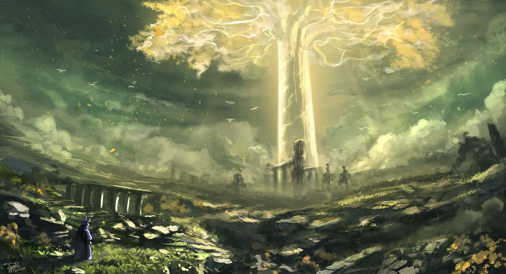
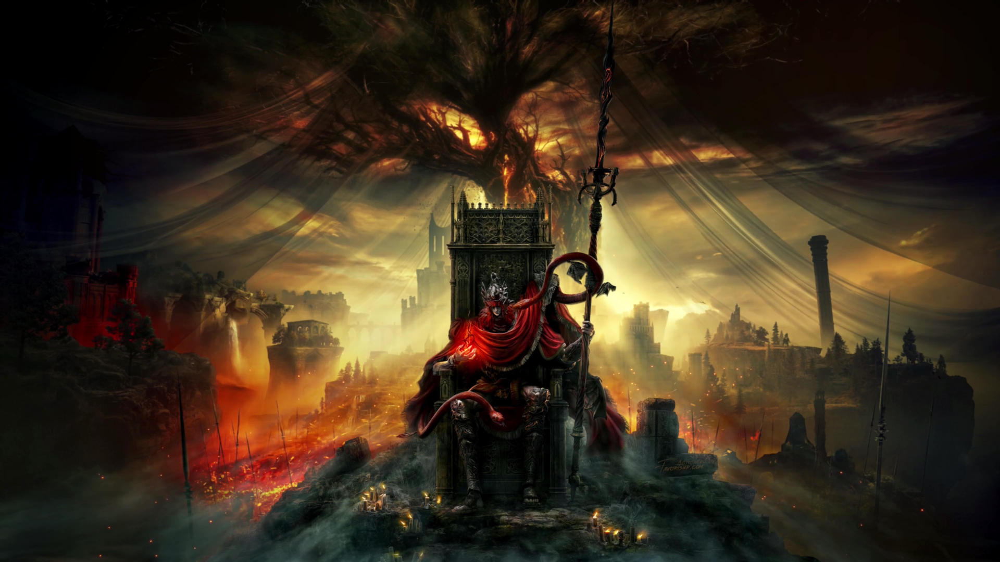

This is a fan page for the video game Elden Ring, a game that is apart of the dark souls video game series. Elden ring was developed by FromSoftware, it was created to be a combination of all the greatest features from past games and make them even better. On the year of its release, Elden ring won multiple awards such as:
Elden ring follows a character named the Tarnished as he travels through the lands between in order to become a Elden Lord. The Tarnished's job is to restore order to the world after it was thrown into chaos with the shattering of the Elden Ring. The Tarnished must find and defeat multiple demigods to achieve this goal.

